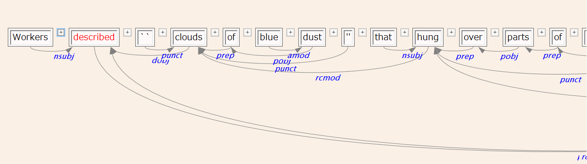
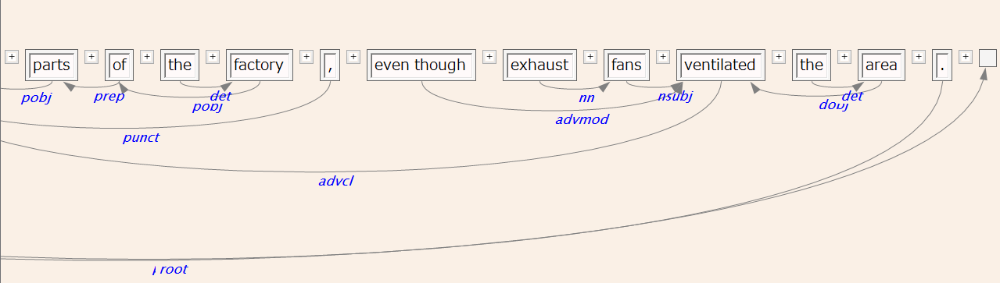

CoNLLファイルのインポート
全自動インポート機能および詳細インポート機能（ChaSen・MeCab・Cabochaファイルのインポート）いずれにおいても、Input Formatとして主に日本語を対象とするMecab/Cabocha諸形式に加えて、主に英語を対象とする CoNLL(Conference on Computational Natural Language Learning) 形式も選ぶことができます。
CoNLL形式は下記の場所で利用可能です。
- 「全自動インポートText2Corpus」の場合は、入力フォーマットの自動認識機能により特に指定しなくてもCoNLL形式であると判断された場合にはCoNLL入力ファイルとして扱われます。
- CreateCorpusによるインポートでは、同じく自動認識機能で判定させるか、"Input Format"指定で"CONLL"を指定することにより強制的にCoNLL形式として入力させることもできます。
- コーパスエクスポート機能において、出力形式を"CONLL"とすると、コーパスの内容をCoNLL形式で出力させることができます。
CoNLL形式の要点は以下の通りです。("The CoNLL 2007 Shared Task on Dependency Parsing", J. Nivre, et.al., Proc. CoNLL Shared Task Session of EMNLP-CoNLL 2007, pp. 915–932)
- Plain Textファイルである。
- 文は1個の空行にて区切る。
- 各行は文内のトークン(単語）に対応し、下記のタブ区切りカラムにより構成される。各カラムの値がない（不定値）の場合は、半角のアンダースコア("_")を入れる。
- ID: 文内のトークン番号で、1から開始される。
- FORM: 表層形（句読点等も含む）
- LEMMA: 基本形
- CPOSTAG: 品詞の上位分類
- POSTAG: 品詞の詳細分類
- FEATS: 付加的属性。属性は制御文字および"|"以外の文字列で表される。複数の属性を持つ場合、"|"によって結合して一つの文字列とする。
- HEAD: 現トークンのHEAD（係り先）トークンのID。なければ0。
- DEPREL: 係りの種別（文字列）。
- PHEAD: 使用しません。
- PDEPREL: 使用しません。
ChaKiにおいては、"FEATS"フィールドを下記の目的で使用しています。元ファイルのこれらの指定は、インポート時に適切に処理されます。
- "SP": この属性を持つトークンは直後に単語間の空白が存在することを示します。（単語列に含めたくないけれども元の文を復元するために必要な文字列は、Wordテーブルにて保持されます。現在のところ、インポート処理では空白文字のみを解釈します。）
- "B-RB"など: 複合語に1語を割り当てる場合、IOB2タグを用いてその範囲を指定することができます。ハイフン以下の情報は複合語の品詞を表しています（現実装では、下記のテーブルに従って解釈されます）。複合語の範囲内にある係り受けは無視され、インポートされません。範囲内から出ていく係り受けが1つだけ存在する必要があります。また、1つのトークンに複数のIOB2属性が指定されていた場合、最初に見つかったもの以外は無視されます。
複合語IOB2属性の品詞対応表
| ハイフンの後続文字列 | 複合語にアサインされる品詞 |
| RB | RB-RB |
| IN | P-IN |
| DT | DT-DT |
| JJ | JJ-JJ |
| NN | NN-NN |
| PP | PP-PP |
| PRP | PR-PRP |
| PRP-S | PR-PRP |
| PRN | PR-PRP |
| UH | UH-UH |
CoNLLにおいて"ID"と"HEAD"で記述される構文構造は、インポート処理内で、1トークンがChaKiの1文節(Bunsetsu Segment)として扱われ（つまり、1単語1文節）、そのIDの文節からHEAD IDの文節への係り受け(Link)が作成されます。 HEAD=0の文節は、文末ダミー文節への係りを持つことになります。 "DEPREL"フィールドは、そのフィールド値と同じ名称を持つLinkタグになります。
下記に、ChaKiの想定しているCoNLL入力サンプルを示します。
1 Workers _ NN NNS SP 2 nsubj _ _ 2 described _ VB VBD SP 0 root _ _ 3 `` _ QUOTE `` _ 4 punct _ _ 4 clouds _ NN NNS SP 2 dobj _ _ 5 of _ P IN SP 4 prep _ _ 6 blue _ JJ JJ SP 7 amod _ _ 7 dust _ NN NN _ 5 pobj _ _ 8 '' _ QUOTE '' SP 4 punct _ _ 9 that _ DT WDT SP 10 nsubj _ _ 10 hung _ VB VBD SP 4 rcmod _ _ 11 over _ P IN SP 10 prep _ _ 12 parts _ NN NNS SP 11 pobj _ _ 13 of _ P IN SP 12 prep _ _ 14 the _ DT DT SP 15 det _ _ 15 factory _ NN NN _ 13 pobj _ _ 16 , _ PUNC , SP 10 punct _ _ 17 even _ RB RB B-IN|SP 21 advmod _ _ 18 though _ SC IN I-IN|SP 21 mark _ _ 19 exhaust _ NN NN SP 20 nn _ _ 20 fans _ NN NNS SP 21 nsubj _ _ 21 ventilated _ VB VBD SP 10 advcl _ _ 22 the _ DT DT SP 23 det _ _ 23 area _ NN NN _ 21 dobj _ _ 24 . _ PUNC . _ 2 punct _ _
これをインポートした結果（係り受け図）を下記に示します。IOB2タグにより、"even though"が1単語としてインポートされています。

